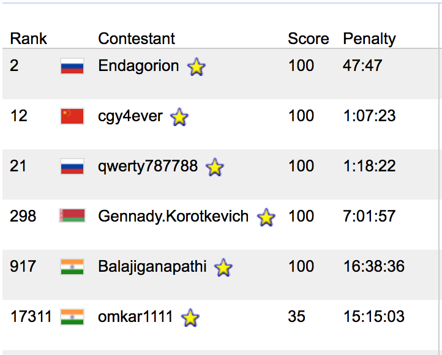
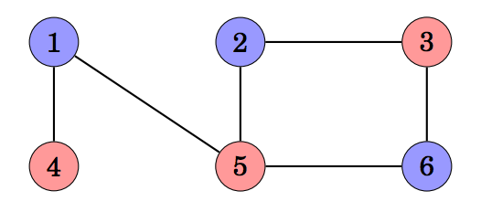
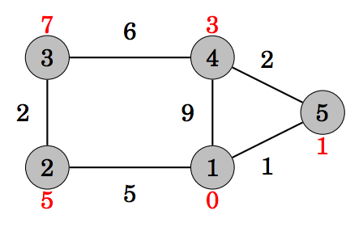

Code Jam 2017. That time of year, again :-)
After a very big gap (and
#define confidence NULL) I came back on grounds of CP.
Last year was fun, only till Round 1x which went pretty much okay, as you can see below. It was my first GCJ and I did very bad! ICYMI, nerdyninja wasn't there last year :P

Moving right along... I'm gonna keep it very simple. I'll talk about topics, which are very easy to understand for beginners.
1. Bipartite Graph
In a coloring of a graph, each node is assigned a color so that no adjacent nodes have the same color.
A graph is bipartite if it is possible to color it using two colors. It turns out
that a graph is bipartite exactly when it does not contain a cycle with an odd
number of edges. For example, the given below graph is bipartite, because it can be colored only using 2 colors and
without having 2 adjacent nodes of same color.

Problem: SPOJ BUGLIFE
My Solution: GitHub Link
2. Shortest Path (Dijkstra's Algorithm)
Dijkstra’s algorithm finds the shortest paths from the starting node to all
other nodes, like the Bellman–Ford algorithm. The benefit in Dijkstra’s algorithm
is that it is more efficient and can be used for processing large graphs. However,
the algorithm requires that there are no negative weight edges in the graph.
A remarkable property in Dijkstra’s algorithm is that whenever a node is selected, its distance is final.

Problem: SPOJ HIGHWAYS
My Solution: GitHub Link